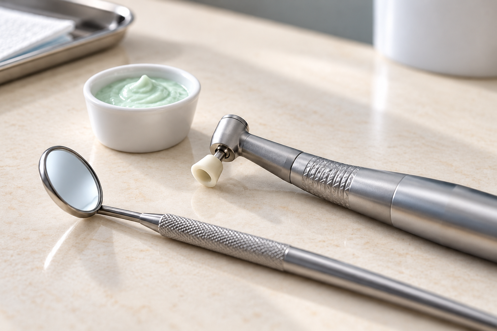

Жигулева Татьяна Сергеевна
врач-стоматолог-терапевт

«Здравствуйте! Меня зовут Татьяна Сергеевна Жигулева, я главный врач стоматологической клиники «Медиа». Наша клиника – это пространство, где передовая медицина встречается с искренней заботой о каждом пациенте. Уже более 25 лет мы помогаем взрослым людям обретать уверенность в себе, полностью избавившись от страха перед стоматологами. Мы создаем место, где ваше лечение будет абсолютно безопасным и результативным. Наша главная цель – сделать ваше лечение именно таким. Добро пожаловать в стоматологическую клинику «Медиа», где лечат с уважением и заботой!»


Ваше здоровье — наш главный приоритет. В нашей клинике внедрены строжайшие международные протоколы стерилизации.

Мы гордимся нашей командой врачей, чей успешный опыт работы составляет более 25 лет.

В стоматологической клинике «Медиа» мы продумали каждую деталь, чтобы вы забыли о стрессе и наслаждались процессом преображения:


За каждой работой — ювелирная точность, восстановленное здоровье и абсолютная уверенность пациента в себе:

Мы ценим ваше доверие и строим отношения на принципах открытости. В стоматологической клинике «Медиа» вы защищены от скрытых доплат:
Мы хотим, чтобы ваше знакомство со стоматологической клиникой «Медиа» было максимально приятным и выгодным:
Специальные выгодные условия на комплексную профессиональную гигиену для всех! Познакомьтесь с нашими стандартами бережного ухода и оцените чистоту и свежесть с первого визита
Бережное ультразвуковое очищение + ProfiFlex + фторирование по специальной фиксированной цене 4299 ₽ для новых пациентов

Профессиональное экспресс отбеливание зоны улыбки по фиксированной цене в честь открытия 10999 ₽ вместо 17000 ₽. Попробуйте бережное осветление эмали, чтобы получить мгновенный результат!
*Имеются противопоказания. необходима консультация специалиста.
Скидка 20% на лечение вашего первого кариеса! Оцените безупречное качество премиальных пломбировочных материалов, абсолютное отсутствие боли и экспертность врачей с 25-летним опытом по максимально привлекательной цене.

Стоматологическая клиника «Медиа» работает строго в правовом поле. Мы гарантируем абсолютную прозрачность и юридическую чистоту:

Для посещения клиники
поднимитесь на 3-й этаж
Пн—Пт 09:00–20:00 · Сб 10:00–18:00
Воскресенье — выходной
Вход в клинику через крыльцо с надписью Магнит, проходите до лифта и поднимаетесь на 3 этаж.
Контакты и маршрутЭлектронная почта организации:
STOMMEDIA@MAIL.RU
ООО «МЕДИА»
Юридический адрес: 630112, Россия, Новосибирская область, г. Новосибирск, ул. Фрунзе, д. 71/1, офис 2
Фактический адрес: 630112, Новосибирская область, г. Новосибирск, ул. Фрунзе, д. 71/1, этаж 4
ОГРН 1245400032680 ИНН 5405098530